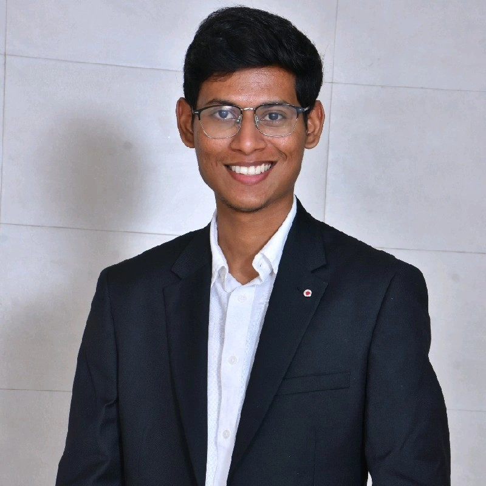

PhD Research Scholar | Amrita School of Nanosciences and Molecular Medicine
Specialized in Next-Generation Lithium and Sodium-Ion Battery technologies. Expertise covers sustainable organic active materials, energy storage configurations, degradation analysis, structural optimization, and computational design frameworks.
Battery Research Center for Green Energy | Taiwan
Research on Porous Carbon Anodes for high-capacity Sodium-ion Battery configurations.
CSIR-Central Electrochemical Research Institute (CECRI) | India
Focusing on structural characterization, synthesis protocols, and Fluorescent properties of Inorganic Phosphors.
Poster Presentation: A Facile Pre-sodiation Strategy Enabling First-Charge Capability of Organic Cathode for Sodium ion Batteries